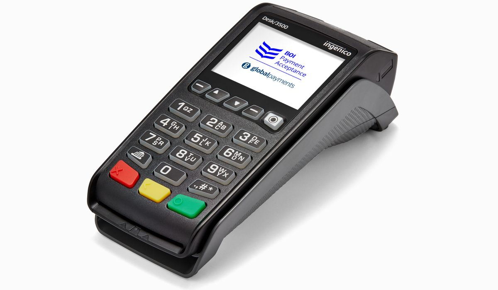

En bref
Quel est le meilleur titre-restaurant pour une PME ? Sur notre relevé de démonstration, UpDéjeuner, la solution d'Upcoop (ex-Chèque Déjeuner), obtient 8,6/10 grâce à un réseau large, au choix carte ou chèque et à un conseiller dédié. Swile suit à 8,3/10 avec la meilleure application du marché, Ticket Restaurant d'Edenred complète le podium à 8,2/10.
- La part patronale est exonérée jusqu'à 7,32 euros par titre en 2026, pour une prise en charge de 50 à 60 %
- Le plafond d'utilisation reste fixé à 25 euros par jour, sans report d'un jour sur l'autre
- Plus de 90 % du volume de titres passe désormais par une carte ou une application
- Aucun émetteur ne publie de grille de frais, les conditions se négocient sur devis
Sommaire de ce comparatif
Le classement des titres-restaurant
Huit émetteurs, une même grille. Nous notons le réseau d'acceptation, les frais facturés à l'employeur, les outils de commande et de dotation, la qualité de l'accompagnement et l'expérience du salarié. Sur une PME, l'accompagnement compte double. Il n'y a pas de service paie de dix personnes pour absorber une erreur de chargement.
01 Le plus completCarte et chèque, conseiller dédié8,6/10
Le plus completCarte et chèque, conseiller dédié8,6/10
Le plus completCarte et chèque, conseiller dédié8,6/1002 La meilleure applicationCarte Mastercard, gestion en ligne8,3/10
La meilleure applicationCarte Mastercard, gestion en ligne8,3/10
La meilleure applicationCarte Mastercard, gestion en ligne8,3/1003 La marque la plus connueRéseau historique de restaurateurs8,2/10
La marque la plus connueRéseau historique de restaurateurs8,2/10
La marque la plus connueRéseau historique de restaurateurs8,2/10UpDéjeuner prend la première place sans écraser personne. La solution d'Upcoop, la coopérative connue pendant cinquante ans sous le nom de Groupe Chèque Déjeuner puis de Groupe Up, revendique près de 40 000 entreprises clientes et 1,2 million d'utilisateurs en France. Elle garde le chèque papier pour les équipes qui le demandent et affecte un interlocuteur à chaque client. Swile la talonne. Son application reste la plus agréable du marché et la gestion RH se fait en autonomie complète, ce qui convient aux entreprises qui n'ont pas besoin qu'on les rappelle.
Ticket Restaurant, la marque d'Edenred, conserve l'avantage de la notoriété. Aucun restaurateur ne refuse un titre qu'il connaît depuis trente ans. Pluxee, l'ancienne branche avantages de Sodexo, a le paiement mobile le plus abouti avec Pluxee Pay.
Le tableau comparatif des 8 émetteurs
Tous les émetteurs agréés appliquent les mêmes règles légales, la même valeur faciale et le même plafond de 25 euros. Ce qui les sépare tient au support, à l'application, au réseau et au service.
| Émetteur | Note /10 | Supports | Paiement mobile | Accompagnement | Le point fort |
|---|---|---|---|---|---|
| UpDéjeuner (Upcoop)Notre choix | 8,6 | Carte et chèque | Oui | Conseiller dédié | Le plus complet |
| Swile | 8,3 | Carte | Apple Pay, Google Pay | En ligne | L'application |
| Ticket Restaurant (Edenred) | 8,2 | Carte et chèque | Apple Pay, Google Pay | Conseiller selon taille | La notoriété |
| Pluxee | 8,0 | Carte | Apple Pay, Pluxee Pay | Conseiller selon taille | Le paiement mobile |
| Bimpli | 7,5 | Carte | Oui | Via le réseau bancaire | Les clients BPCE |
| Worklife | 7,3 | Carte | Apple Pay, Google Pay | En ligne | Le multi-avantages |
| Ekip | 7,1 | Carte optionnelle | Apple Wallet, Google Wallet | En ligne | La mise en place rapide |
| RestoFlash | 6,9 | Sans carte dédiée | Via la carte bancaire | En ligne | Pas de carte à gérer |
Relevé de démonstration, supports et fonctionnalités relevés sur les sites des émetteurs en octobre 2026. Frais sur devis, non publiés.

Trois lectures du tableau. Le chèque papier ne survit que chez deux émetteurs, UpDéjeuner et Ticket Restaurant, et sa fin est programmée par la réforme en cours. Le paiement mobile est devenu un standard, seule RestoFlash le délègue à la carte bancaire personnelle du salarié. Enfin, l'accompagnement humain reste le vrai différenciant. Swile, Worklife et Ekip misent sur le self-service, Upcoop et les deux groupes cotés sur un conseiller, au moins au-delà d'une certaine taille.
Le réseau d'acceptation, critère numéro un
Un titre-restaurant refusé à la caisse est le premier motif de plainte des salariés. La Commission nationale des titres-restaurant agrée plus de 248 000 établissements, mais chaque émetteur signe ses propres affiliations avec les commerçants.
- Upcoop annonce 300 000 commerçants acceptant ses titres, toutes solutions confondues
- Ticket Restaurant et Pluxee profitent de trente ans d'affiliations avec les restaurateurs indépendants
- Swile s'appuie sur le réseau Mastercard, avec un contrôle de la catégorie du commerce au moment du paiement
- RestoFlash contourne la question en remboursant le salarié qui paie avec sa propre carte
Sur une PME de trente salariés, un seul refus par semaine dans la brasserie d'en bas suffit à décrédibiliser le dispositif. Avant de signer, demandez la liste des commerces affiliés dans un rayon de 500 mètres.
Combien coûte un titre-restaurant à l'employeur
Le coût se lit en deux parties, la part patronale, qui est un avantage pour le salarié, et les frais de l'émetteur, qui sont le vrai prix du service. Les frais ne sont jamais publiés, ils se négocient. Les ordres de grandeur ci-dessous viennent de devis types pour une entreprise de 30 salariés.
| Poste | Montant par salarié et par mois | Ce qui le fait varier |
|---|---|---|
| Part patronale (60 % d'un titre de 12,20 €) | 146,40 € | Valeur faciale et nombre de jours travaillés |
| Frais de gestion de l'émetteur | 1,90 € à 4,60 € | Volume, support, négociation |
| Frais de carte (création, renouvellement) | 0 € à 5 € par an | Émetteur et formule |
| Frais de livraison des chèques | Selon commande | Disparaît avec la carte |
Relevé de démonstration. Base de 20 jours travaillés par mois, titre de 12,20 euros financé à 60 %, devis types d'octobre 2026.
La part patronale ne coûte presque rien de plus qu'une augmentation brute équivalente, elle coûte même moins. 146,40 euros versés en salaire coûteraient près de 210 euros chargés à l'entreprise. C'est la raison pour laquelle le titre-restaurant reste l'avantage préféré des salariés et le plus diffusé dans les PME.
UpDéjeuner, Swile ou Ticket Restaurant, comment choisir
Si votre priorité est d'être accompagné
UpDéjeuner. Upcoop affecte un interlocuteur au client et guide la mise en place, de la collecte des données salariés au premier chargement. C'est la solution qui demande le moins de temps à une PME sans service paie étoffé.
Si votre priorité est l'application
Swile. Les salariés l'adoptent sans formation, l'application gère aussi d'autres avantages et le côté RH se pilote seul. Comptez moins d'accompagnement humain en contrepartie.
Si votre priorité est l'acceptation chez les restaurateurs
Ticket Restaurant ou UpDéjeuner, les deux marques que les restaurateurs indépendants acceptent depuis le plus longtemps, et les deux seules à garder le chèque papier pour les équipes qui y tiennent.
Si vous êtes déjà client d'une banque du groupe BPCE
Regardez Bimpli, l'ancien Apetiz, intégré au groupe Swile. La souscription passe souvent par le conseiller bancaire, ce qui simplifie le démarrage.
Notre verdict
Le meilleur titre-restaurant pour une PME en 2026 est UpDéjeuner d'Upcoop, avec 8,6/10. Il gagne sur l'accompagnement et sur la souplesse des supports, et ne perd que sur l'application, où Swile reste devant.
Si vos équipes sont jeunes et autonomes, prenez Swile. Si vos salariés déjeunent surtout chez des restaurateurs indépendants, Ticket Restaurant reste une valeur sûre. Si le paiement mobile est votre critère, Pluxee.
Questions fréquentes
Quel est le meilleur titre-restaurant pour une PME en 2026 ?
Sur notre relevé de démonstration, UpDéjeuner d'Upcoop obtient la meilleure note avec 8,6/10, devant Swile (8,3/10) et Ticket Restaurant d'Edenred (8,2/10). UpDéjeuner gagne sur l'accompagnement et le choix carte ou chèque, Swile sur l'application.
Quelle est la meilleure carte titre-restaurant ?
Swile propose l'application la mieux notée, Pluxee le paiement mobile le plus complet et UpDéjeuner la carte la mieux accompagnée côté employeur. Toutes plafonnent les dépenses à 25 euros par jour.
UpDéjeuner, c'est l'ancien Chèque Déjeuner ?
Oui. Le Chèque Déjeuner, créé en 1964, est devenu UpDéjeuner quand le Groupe Chèque Déjeuner a pris le nom de Groupe Up, puis d'Upcoop. C'est le même émetteur coopératif.
Combien coûte un titre-restaurant à l'employeur ?
Pour un titre de 12,20 euros financé à 60 %, la part patronale atteint 7,32 euros par jour, soit 146,40 euros par mois sur 20 jours. Les frais de l'émetteur s'ajoutent, de 1,90 à 4,60 euros par salarié et par mois selon nos devis types.
Swile et Bimpli, c'est la même entreprise ?
Swile a racheté Bimpli, l'ancien Apetiz du groupe BPCE. Les deux marques coexistent, BPCE est devenu actionnaire de Swile.
Peut-on changer d'émetteur de titres-restaurant en cours d'année ?
Oui, il n'existe pas de durée minimale légale. Il faut respecter le préavis du contrat, prévoir l'utilisation des soldes restants par les salariés et caler le premier chargement du nouvel émetteur sur un début de mois.
Notre méthode
Ce comparatif repose sur des données publiques, vérifiables une par une.
- Les plafonds d'exonération sont ceux publiés par l'URSSAF et le BOSS pour l'année en cours
- Les réseaux d'acceptation, les supports et les fonctionnalités sont relevés sur les sites officiels des émetteurs
- Les frais et commissions sont des ordres de grandeur issus de devis types, à confirmer par un devis à votre nom
- Les avis utilisateurs proviennent des stores d'applications et des plateformes d'avis vérifiés
- La grille de notation est identique d'un comparatif à l'autre et publiée en bas de chaque article